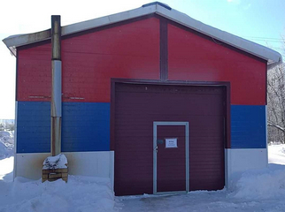

ПУНКТ ТЕХНИЧЕСКОГО ОСМОТРА
ИП Сахарных Н.С.
613500, Кировская область,
пгт. Лебяжье, ул. Строителей, д. 14
Тел.: 8-912-367-49-61
E-mail: nicksaharnyh@yandex.ru
Сайт: sto.github.io
Режим работы пункта ТО:
Ежедневно с 8:00 до 17:00
Документы для прохождения ТО:
- свидетельство о регистрации авто или ПТС;
- удостоверения водителя;
- квитанция об оплате услуг оператора ТО.
№ п/п
|
Категория транспортного средства *
|
Предельный размер платы за
проведение технического осмотра, рублей
|
1
|
Транспортные средства, используемые для перевозки пассажиров и имеющие, помимо
места водителя, не более восьми мест для сидения - легковые автомобили
(категория M1)
|
480
|
2
|
Транспортные средства, используемые для перевозки пассажиров, имеющие,
помимо места водителя, более восьми мест для сидения, технически допустимая
максимальная масса которых не превышает 5 тонн, за исключением городского
наземного электрического транспорта (категория M2)
|
864
|
3
|
Транспортные средства, используемые для перевозки пассажиров, имеющие,
помимо места водителя, более восьми мест для сидения,
технически допустимая максимальная масса которых превышает 5 тонн, за
исключением городского наземного электрического транспорта (категория M3)
|
1 040
|
4
|
Транспортные средства, предназначенные для перевозки грузов, имеющие
технически допустимую максимальную массу не более 3,5 тонн (категория N1)
|
512
|
5
|
Транспортные средства, предназначенные для перевозки грузов, имеющие
технически допустимую максимальную массу свыше 3,5 тонн, но не более 12 тонн
(категория N2)
|
1 008
|
6
|
Транспортные средства, предназначенные для перевозки грузов, имеющие
технически допустимую максимальную массу более 12 тонн (категория N3)
|
1 088
|
Копия аттестата аккредитации оператора ТО
Предварительная запись на ТО возможна по телефону:
8-912-367-49-61
2021 © ИП Сахарных Н.С.
{kind=link}